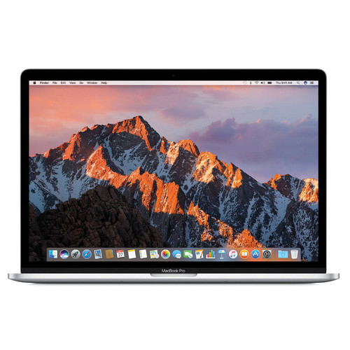
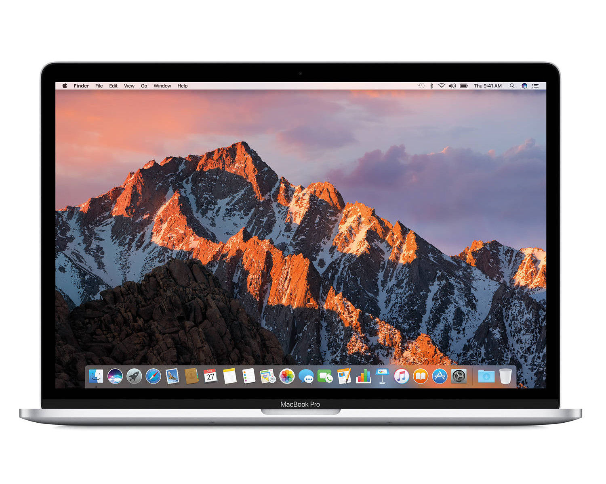
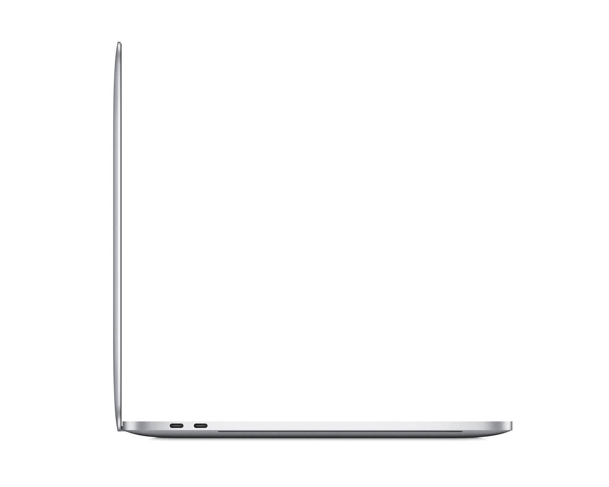
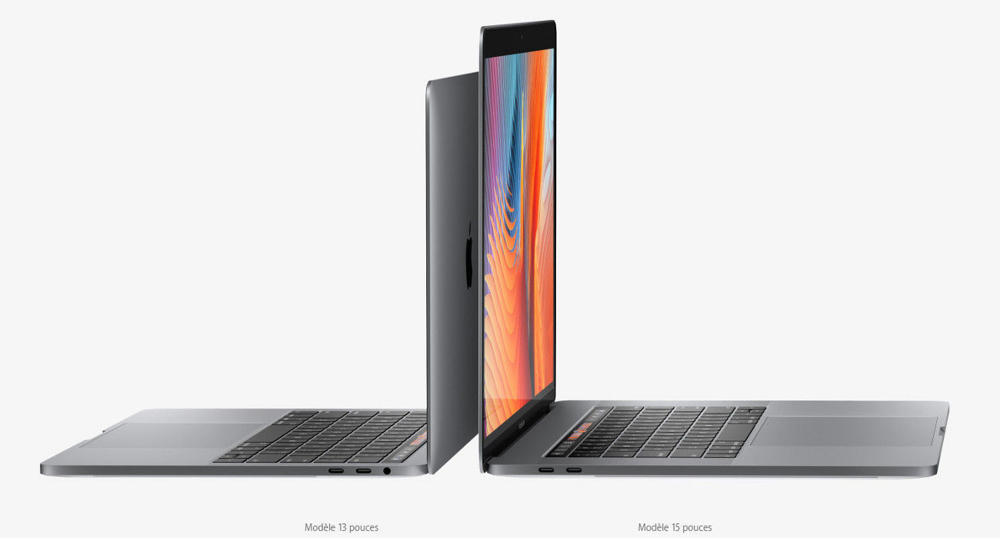
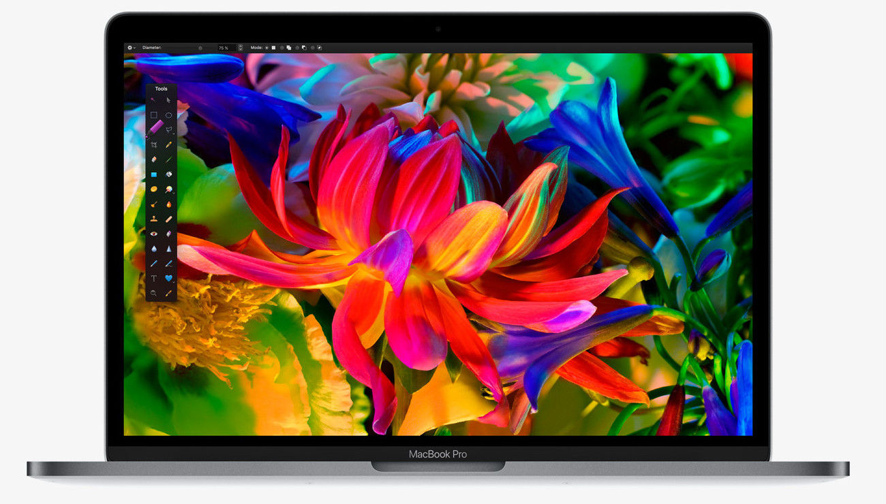
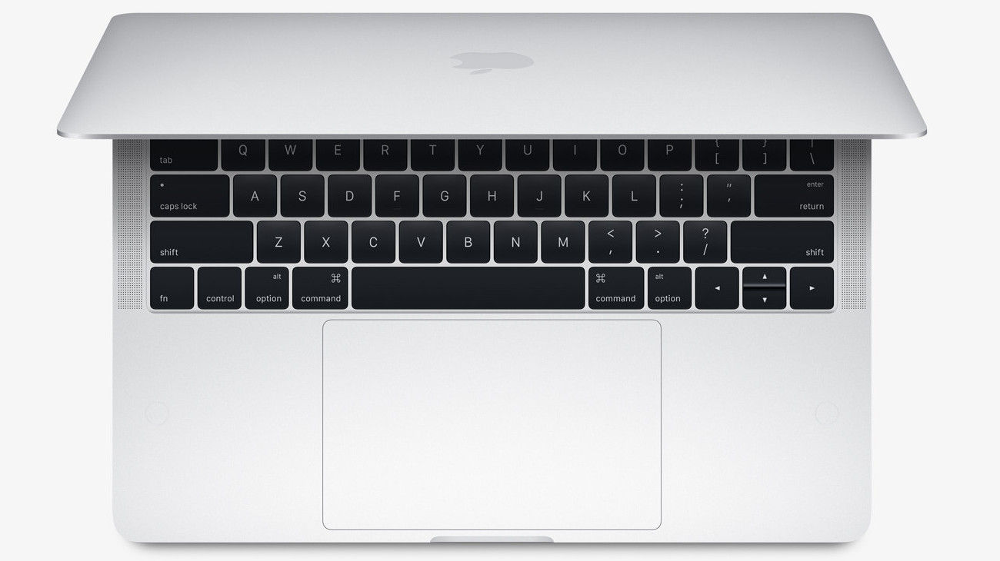
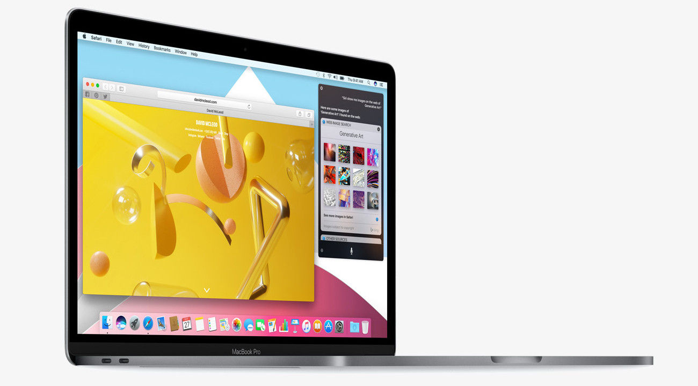

L'inform


Apple MacBook Pro 13 128 Go Argent (2017)
Réf APPLE : MPXR2FN/A
PC Ultra Portable 13.3'' Retina (2560 x 1600) - Intel Core i5 Dual Core 2.3 GHz - 8 Go DDR3 - SSD 128 Go - 1.37 Kg - MacOS
Réf APPLE : MPXR2FN/A
PC Ultra Portable 13.3'' Retina (2560 x 1600) - Intel Core i5 Dual Core 2.3 GHz - 8 Go DDR3 - SSD 128 Go - 1.37 Kg - MacOS


Apple MacBook Pro 13 128 Go Argent (2017)
APPLE
Garantie légale de conformité : 2 ans

Apple MacBook Pro 13 128 Go Argent (2017)
D’une finesse et d’une légèreté hors du commun, le MacBook Pro est encore plus rapide et plus puissant qu’avant. Il arbore l’écran le plus lumineux et le plus coloré jamais vu sur un portable Mac. Innovant et créatif, le MacBook Pro a été inventé pour que vous puissiez tout réinventer.
L'outil créatif par excellence
Avec le MacBook Pro, l’ordinateur portable atteint des sommets inexplorés en matière de performances et de portabilité. Où que vous mène votre inspiration, vous y parviendrez plus vite que jamais grâce à des graphismes de pointe, des processeurs hautes performances et un stockage vif comme l’éclair. Entre autre.
L'écran le plus lumineux et le plus coloré jamais vu sur un portable Mac
L’écran du nouveau MacBook Pro est le plus abouti jamais vu sur un portable Mac. Il est doté d’un rétroéclairage par LED plus lumineux et d’un contraste plus marqué, affichant ainsi des noirs plus profonds et des blancs plus éclatants. Grâce à une ouverture des pixels plus grande et à un taux de rafraîchissement variable, il est aussi plus économe en énergie que les modèles de générations précédentes. Le nouveau MacBook Pro est le premier portable Mac à prendre en charge une gamme de couleurs aussi large, avec des verts et des rouges encore plus vifs. Plus fidèles, les images foisonnent de détails d’un réalisme saisissant. Un atout essentiel pour le graphisme, le montage et l’étalonnage.
Stockage SSD plus rapide. Vous voilà aussi vif que l'éclair
Le MacBook Pro est doté d’un SSD ultra-rapide, avec des débits en lecture séquentielle atteignant 3.2 Go/s. Et sa mémoire conjugue haut débit avec efficacité énergétique. Tout s’accorde donc pour vous permettre de démarrer, de lancer plusieurs apps à la fois ou d’importer des fichiers très lourds en un temps record.
Toute une journée d'autonomie. Impressionnant
Le nouveau MacBook Pro réussit l’exploit de livrer encore plus de performances dans un design encore plus fin, tout en offrant la même autonomie d’une journée : jusqu’à 10 heures. Où que vous soyez, vous avez donc toute latitude pour regarder des vidéos, retoucher des images ou vous défouler sur le jeu du moment.

Régulation de la chaleur. Un haut degré d'innovation
Plus un ordinateur portable est fin, moins il laisse de place au système de refroidissement. Le nouveau MacBook Pro intègre donc dans l’ensemble du système des innovations qui permettent d’évacuer la chaleur plus efficacement que sur le modèle de génération précédente en augmentant le flux d’air lorsque vous effectuez des tâches intensives : par exemple, faire du montage vidéo, jouer à des jeux aux graphismes sophistiqués ou transférer des fichiers très volumineux.
Des haut-parleurs qui vont faire parler d'eux
Le son haute fidélité du MacBook Pro vous ouvre de nouveaux horizons d’écoute. Grâce à sa large gamme dynamique et à ses basses renforcées, il est parfaitement équilibré. Les haut-parleurs, reliés directement à l’alimentation du système, permettent une plus grande amplification des crêtes. Ce qui fait du MacBook Pro le choix idéal pour mixer un morceau à la volée, monter une séquence vidéo sur le terrain ou regarder un film n’importe où.
Tout a été augmenté. La taille du trackpad et la sensibilité du clavier
L’interaction avec le MacBook Pro est d’une parfaite fluidité. Avec notre mécanisme papillon de deuxième génération, les touches de son clavier sont quatre fois plus stables qu’avec un mécanisme ciseau classique, pour plus de confort et de réactivité. Quant au vaste trackpad Force Touch, il offre à vos doigts un espace généreux pour cliquer, balayer, pincer, faire pivoter...
Thunderbolt 3 : Puissant. Polyvalent. Fulgurant
Thunderbolt 3 associe une bande passante extrêmement élevée à la grande polyvalence de la norme USB-C pour créer un port universel reboosté. Cette technologie réunit dans un même connecteur le transfert de données, la sortie vidéo et l’alimentation, offrant jusqu’à 40 Gbit/s de débit, soit deux fois la bande passante de Thunderbolt 2. Comme le nouveau MacBook Pro dispose de deux ports de chaque côté, vous pouvez faire tout ce que voulez, d’un côté ou de l’autre. Vos appareils actuels se connectent facilement à l’aide d’un câble ou d’un adaptateur. Enfin, Thunderbolt 3 étant réversible, peu importe la façon dont vous le branchez, il est toujours dans le bon sens.
MacOS : C'est à ça qu'on reconnaît un Mac
MacOS est le système d’exploitation qui fait battre le cœur de chaque Mac. Conçu pour tirer pleinement parti du matériel et être aussi intuitif qu’esthétique, il intègre une fantastique collection d’apps que vous adorerez utiliser au quotidien. Il est aussi doté d’iCloud et d’autres moyens novateurs de faire collaborer votre Mac avec vos appareils iOS et votre Apple Watch.
APPLE
Garantie légale de conformité : 2 ans
Apple MacBook Pro 13 128 Go Argent (2017)
D’une finesse et d’une légèreté hors du commun, le MacBook Pro est encore plus rapide et plus puissant qu’avant. Il arbore l’écran le plus lumineux et le plus coloré jamais vu sur un portable Mac. Innovant et créatif, le MacBook Pro a été inventé pour que vous puissiez tout réinventer.

L'outil créatif par excellence
Avec le MacBook Pro, l’ordinateur portable atteint des sommets inexplorés en matière de performances et de portabilité. Où que vous mène votre inspiration, vous y parviendrez plus vite que jamais grâce à des graphismes de pointe, des processeurs hautes performances et un stockage vif comme l’éclair. Entre autre.
L'écran le plus lumineux et le plus coloré jamais vu sur un portable Mac
L’écran du nouveau MacBook Pro est le plus abouti jamais vu sur un portable Mac. Il est doté d’un rétroéclairage par LED plus lumineux et d’un contraste plus marqué, affichant ainsi des noirs plus profonds et des blancs plus éclatants. Grâce à une ouverture des pixels plus grande et à un taux de rafraîchissement variable, il est aussi plus économe en énergie que les modèles de générations précédentes. Le nouveau MacBook Pro est le premier portable Mac à prendre en charge une gamme de couleurs aussi large, avec des verts et des rouges encore plus vifs. Plus fidèles, les images foisonnent de détails d’un réalisme saisissant. Un atout essentiel pour le graphisme, le montage et l’étalonnage.

Stockage SSD plus rapide. Vous voilà aussi vif que l'éclair
Le MacBook Pro est doté d’un SSD ultra-rapide, avec des débits en lecture séquentielle atteignant 3.2 Go/s. Et sa mémoire conjugue haut débit avec efficacité énergétique. Tout s’accorde donc pour vous permettre de démarrer, de lancer plusieurs apps à la fois ou d’importer des fichiers très lourds en un temps record.
Toute une journée d'autonomie. Impressionnant
Le nouveau MacBook Pro réussit l’exploit de livrer encore plus de performances dans un design encore plus fin, tout en offrant la même autonomie d’une journée : jusqu’à 10 heures. Où que vous soyez, vous avez donc toute latitude pour regarder des vidéos, retoucher des images ou vous défouler sur le jeu du moment.
Régulation de la chaleur. Un haut degré d'innovation
Plus un ordinateur portable est fin, moins il laisse de place au système de refroidissement. Le nouveau MacBook Pro intègre donc dans l’ensemble du système des innovations qui permettent d’évacuer la chaleur plus efficacement que sur le modèle de génération précédente en augmentant le flux d’air lorsque vous effectuez des tâches intensives : par exemple, faire du montage vidéo, jouer à des jeux aux graphismes sophistiqués ou transférer des fichiers très volumineux.
Des haut-parleurs qui vont faire parler d'eux
Le son haute fidélité du MacBook Pro vous ouvre de nouveaux horizons d’écoute. Grâce à sa large gamme dynamique et à ses basses renforcées, il est parfaitement équilibré. Les haut-parleurs, reliés directement à l’alimentation du système, permettent une plus grande amplification des crêtes. Ce qui fait du MacBook Pro le choix idéal pour mixer un morceau à la volée, monter une séquence vidéo sur le terrain ou regarder un film n’importe où.
Tout a été augmenté. La taille du trackpad et la sensibilité du clavier
L’interaction avec le MacBook Pro est d’une parfaite fluidité. Avec notre mécanisme papillon de deuxième génération, les touches de son clavier sont quatre fois plus stables qu’avec un mécanisme ciseau classique, pour plus de confort et de réactivité. Quant au vaste trackpad Force Touch, il offre à vos doigts un espace généreux pour cliquer, balayer, pincer, faire pivoter...

Thunderbolt 3 : Puissant. Polyvalent. Fulgurant
Thunderbolt 3 associe une bande passante extrêmement élevée à la grande polyvalence de la norme USB-C pour créer un port universel reboosté. Cette technologie réunit dans un même connecteur le transfert de données, la sortie vidéo et l’alimentation, offrant jusqu’à 40 Gbit/s de débit, soit deux fois la bande passante de Thunderbolt 2. Comme le nouveau MacBook Pro dispose de deux ports de chaque côté, vous pouvez faire tout ce que voulez, d’un côté ou de l’autre. Vos appareils actuels se connectent facilement à l’aide d’un câble ou d’un adaptateur. Enfin, Thunderbolt 3 étant réversible, peu importe la façon dont vous le branchez, il est toujours dans le bon sens.
MacOS : C'est à ça qu'on reconnaît un Mac
MacOS est le système d’exploitation qui fait battre le cœur de chaque Mac. Conçu pour tirer pleinement parti du matériel et être aussi intuitif qu’esthétique, il intègre une fantastique collection d’apps que vous adorerez utiliser au quotidien. Il est aussi doté d’iCloud et d’autres moyens novateurs de faire collaborer votre Mac avec vos appareils iOS et votre Apple Watch.

| Processeur |
type :Intel Core i5 Fréquence: 2.3 GHz / Turbo à 3.6 GHz Coeurs :Dual Core |
|---|---|
| Chipset | Type: Intel Iris Plus Graphics dédiée |
| Carte Graphique | Type: Pas de carte graphique déediée |
| Mémoire (RAM) | Type: 8 Go LPDDR3 (2133 MHz) |
| Stockage | Type: SSD 128 Go PCIe |
| Ecran |
Type: Ecran Retina rétroéclairé par LED de 13.3 pouces (33.e cm)/IPS Résolution: Retina (2560 x 1600) Ecran tactile: Non |
| Systéme d'exploitation | OS: MacOS Sierra |
| Audio | Type: Haut-parleur stéréo à gamme dynamique élevée |
| Connectique |
USB: 2 (2 x USB-C Thunderbolt 3) Audio: 1 (jack 3.5 mm) |
| Connectique |
Wifi: Wi-Fi 802.11ac Bluetooth: Bluetooth 4.2 |
| Matériel |
Clavier: Clavier AZERTY chiclet Clavier rétroéclairé: Oui Webcam: Caméra FaceTime HD 720p Lecteur optique: Non Touch Bar: Non |
| Alimentation |
type: Batterie lithium polymère intégrée 54.5 Wh Autonomie: Jusqu'à 10 heures environ (estimation constructeur) |
| Dimension | Dimension: 304.1 x 212.4 x 14.9 mm |
| Poids | Poids: 1.37 Kg |